Sistemas politicos, representacion, cambio politico y social
Ilustraciones de un sistema político
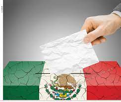
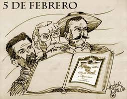
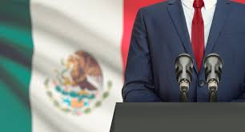
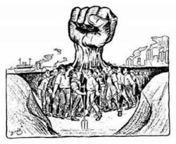
¡Bienvenido!
Bienvenido a nuestro sitio sobre sistemas políticos. Aquí encontrarás información detallada sobre distintos modelos políticos que han influido en la historia y en la actualidad.
Explora cada sección para aprender más acerca de la monarquía, dictadura, república, la importancia de la división de poderes y cómo la participación ciudadana contribuye al desarrollo político.
¡Esperamos que encuentres la información interesante y educativa!
Que son los sistemas políticos?
Los sistemas políticos son estructuras y procesos por los cuales se organizan y gestionan las comunidades humanas...
Estos sistemas políticos pueden coexistir en diversas formas, y muchos países adoptan una combinación de elementos de varios de ellos...
La monarquía es una forma de gobierno en la cual la jefatura del Estado recae sobre el rey, variando sus competencias y poderes según el tipo de monarquía que se instale.
En la monarquía, el rey es el jefe del Estado, y como tal tiene una serie de poderes. Estos varían desde ostentar todo el poder estatal como ocurre en las monarquías absolutas, a no tener ningún poder como en las monarquías parlamentarias, donde el rey es el mero símbolo de la unidad del paísblank.
h3>Hay tres tipos de monarquía:
Las monarquías surgieron con las primeras civilizaciones, alrededor del año 3.000 a. C., en la Mesopotamia, Egipto y el Valle del Indo. Consistían en gobiernos religiosos, en los que el monarca era, al mismo tiempo, dios, sacerdote y caudillo militar
CARACTERISTICAS DE LA MONARQUIA
01 MONARCA
02 HERENCIA
03 CEREMONIAL DE PAPEL
04 PARLAMENTO
05 PAPEL DE LA POLITICA EXTERIOR
06 CIMBOLO NACIONAL
07 ESTABILIDAD Y CONTINUIDAD
08 TURISMO
Conoce mas en...
Ilustraciones de la dictadura
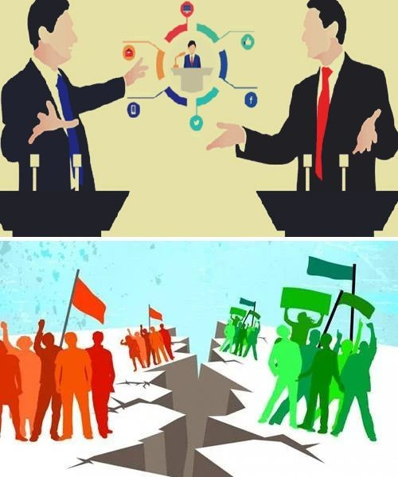
Dictadura
La dictadura es un sistema político donde el poder se reduce a las manos de unas pocas personas y que no sigue los principios democráticos. No obstante, puede haberlas de muchos tipos,
independientemente de la ideología, este se refiere a un sistema de gobierno donde el poder se concentra en una persona o un grupo de personas que no están sometidas a las leyes, el control
y separación de poderes propias de una democracia. Además, se caracteriza por la falta de pluralismo político y por vulnerar los derechos y libertades civiles de la población
mediante su control autoritario.
Dictadura
Concentración de poder
Autoritarismo
Falta de pluralismo político
Represión política
Duración indefinida
Control de las fuerzas armadas
Falta de división de poderes
Propaganda y control de la información
Violencia política
Economía controlada
Las dictaduras pueden instaurarse de maneras muy distintas, algunas incluso llegando al poder democráticamente, otras a través de revoluciones, guerras civiles o golpes de Estado.
Pero incluso si su origen es legítimo y democrático, las prácticas autoritarias y el desbalance de poderes que implica toda dictadura impide su remoción del poder, y a veces incluso
su sola denuncia. No debemos confundir las dictaduras con las monarquías, ya que en estas últimas el poder del rey es limitado por las demás fuerzas políticas (en el caso de las monarquías
parlamentarias, por ejemplo) o suscrito a una constitución (en el caso de las monarquías constitucionales).
La dictadura es un concepto político moderno.
Conoce mas en...
Ilustraciones de Republica
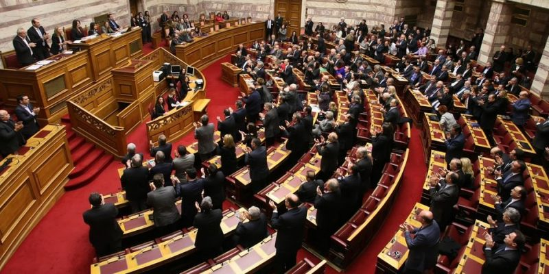
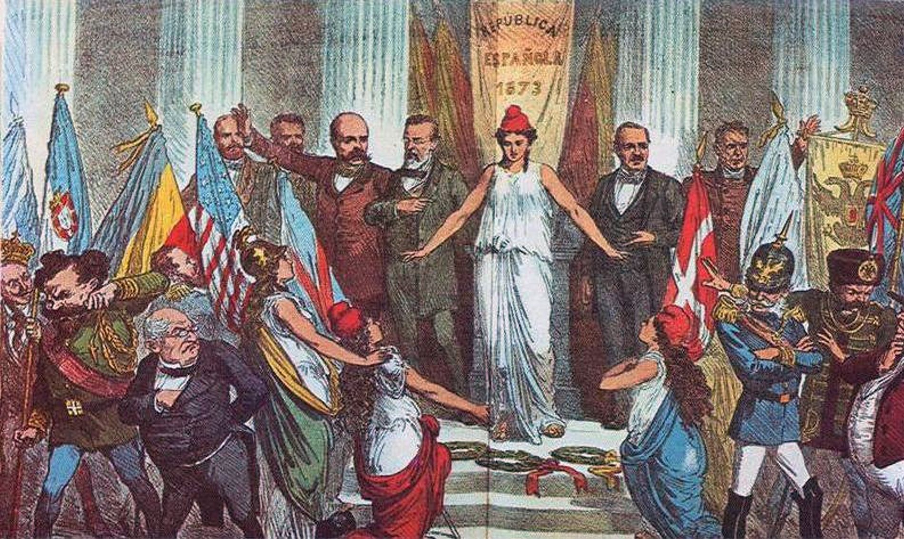
Republica
Es una Organización del Estado cuya máxima autoridad es elegida por los ciudadanos o por el Parlamento para un período determinado. Estado cuya forma de gobierno es una república.
República difiere del uso antiguo, y generalmente se refiere al imperio de la ley y la separación de los poderes públicos. En ese sentido, la existencia de la república es contraria al acaparamiento del poder político por parte de una sola figura, como ocurre en las autocracias, o a la designación vitalicia de cargos públicos, como ocurre en las monarquías. Características de una república
En general, una república tiene las siguientes características fundamentales:
Participación política activa de los ciudadanos
Representación ciudadana igualitaria en las instituciones
Libertad e igualdad ante la ley para la ciudadanía
Conoce mas en...
Ilustraciones de la Divicion de Poderes
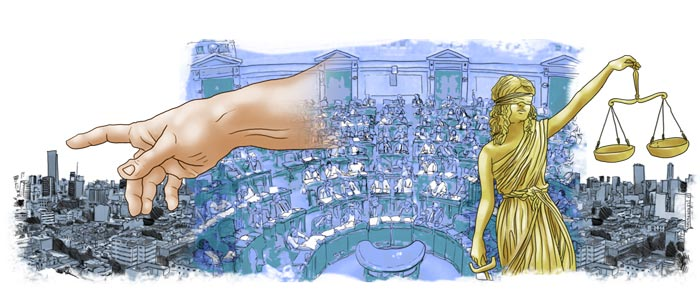
Divicion de Poderes
Separación de poderes o división de poderes es un principio político en algunas formas de gobierno, en el cual los poderes legislativo, ejecutivo y judicial del Estado son ejercidos por órganos de gobierno distintos, autónomos e independientes entre sí.
Conoce mas en...
Ilustraciones de la Participacion Ciudadana
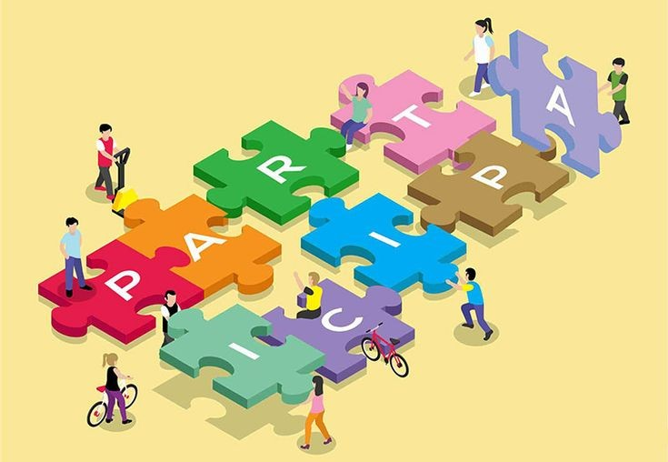
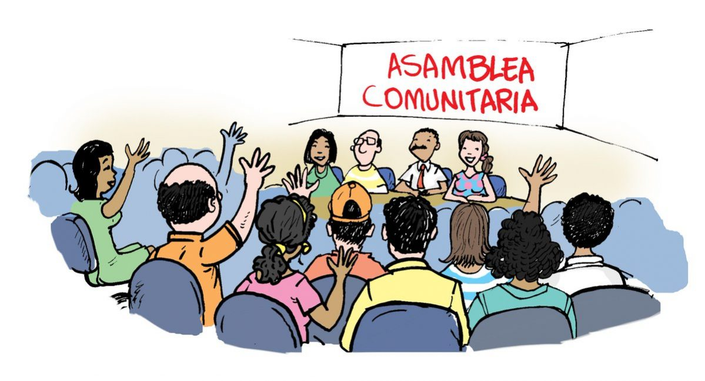
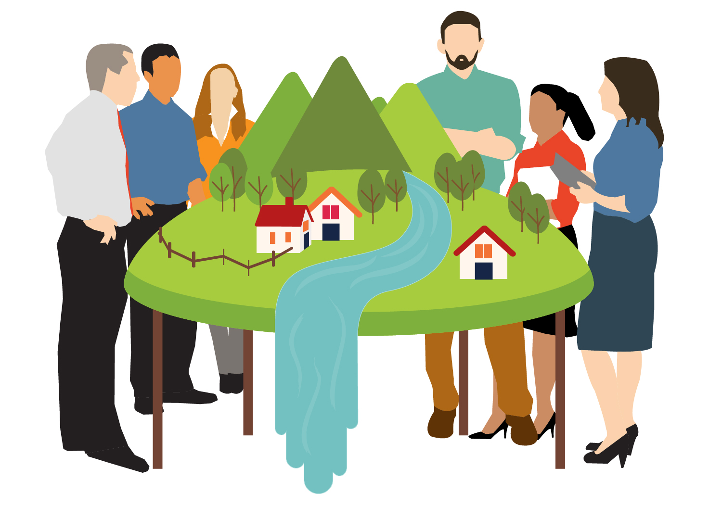
Participación Ciudadana
La participación ciudadana es la intervención de la ciudadanía en la toma de decisiones respecto al manejo de los recursos y las acciones que tienen un impacto en el desarrollo de sus comunidades
Toda persona tiene el derecho individual o colectivo para intervenir en las decisiones públicas, deliberar, discutir y cooperar con las autoridades, así como para incidir en la formulación, ejecución y evaluación de las políticas y actos
 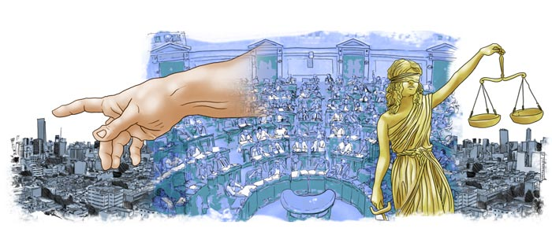
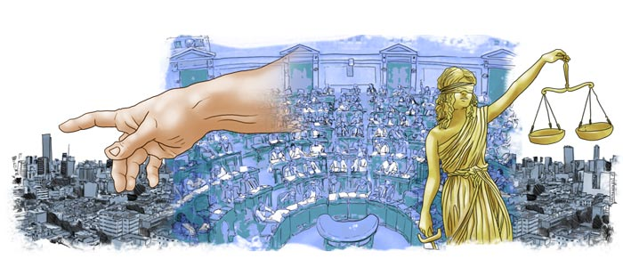